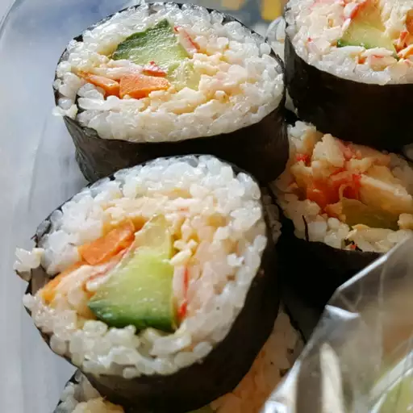

Sushi

Description
Craft a delightful sushi experience with this recipe that combines traditional
techniques with fresh, vibrant ingredients. Learn how to prepare perfectly seasoned
sushi rice, artfully slice fresh fish, and roll it all into a harmonious bite.
Ingredients
- 2 ¼ cups Japanese sushi-style rice
- 1 (4 inch) piece konbu dried kelp (Optional)
- 3 cups water
- ¼ cup rice vinegar
- ¼ cup white sugar
- 1 ¼ teaspoons salt
Steps
- Place rice into a large, deep bowl. Fill with cold water and rub rice
together with hands until water turns milky white. Pour off cloudy water,
being careful not to pour out rice. Repeat 3 or 4 times until you can see
rice through 3 inches of water.
- Drain rice in a fine strainer, then place into a saucepan along with konbu
and 3 cups water. Allow to stand for 30 minutes. Stir together rice vinegar,
sugar, and salt until dissolved in a small bowl; set aside.
- Cover, and bring rice to a boil over high heat, then reduce heat to low, and
simmer for 15 minutes. Remove from heat and allow to stand, covered, for 5 minutes.
- Scrape rice into a bowl; remove and discard konbu. Stir in vinegar mixture until well
incorporated and no lumps of rice remain. Allow to cool at room temperature. For a shinier
appearance, use an electric fan to cool rice rapidly.